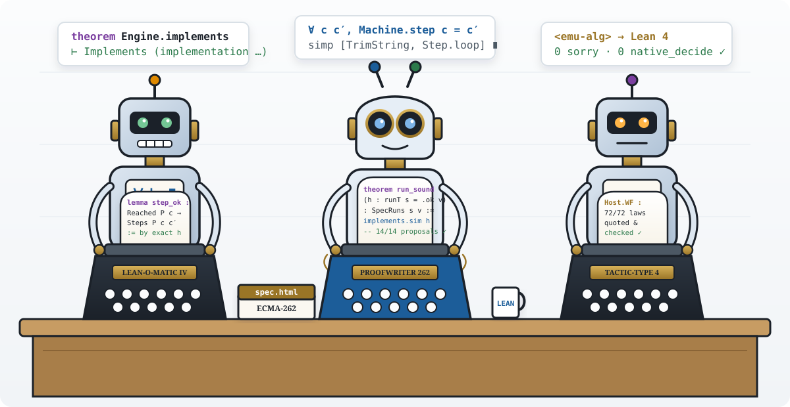

spec.htmlFormalization's time has come
James M Snell · Dan Carney · TC39 #117

Applies spec.emu onto spec.html · checks grammar SDOs, slots & types
BoundNames row on import defer*undefined* vs. ~empty~ / ~unused~ in Immutable ArrayBuffers[[DeferredNamespace]] in ParseModule & JSON modulesspec.emu
§22.1.3.32 String.prototype.trim — eemeli/proposal-trim-chars
<emu-clause id="sec-string.prototype.trim" type="built-in function"> <h1>String.prototype.trim ( <ins>[ _characters_ ]</ins> )</h1> <emu-alg> 1. Let _thisValue_ be the *this* value. 1. Return ? TrimString(_thisValue_, ~start+end~<ins>, _characters_</ins>). </emu-alg> </emu-clause>
lean/Ecma/Gen/S22_1_part2.lean
Before (ECMA-262)
def «String.prototype.trim» : Alg := { id := ⟨1454, 0⟩ name := "String.prototype.trim" header := { kind := .builtin, params := [], ret := none, recv := none, desc := [] } vars := #["this value", "NewTarget", "thisValue"] body := [ (.mk [] (.let_ 2 (.thisValue false))), (.mk [] (.ret (some (.q (.call (.alg ⟨1455, 0⟩) [(.var 2), (.enum 88)])))))] }
lean/Ecma/Gen/S22_1_part2.lean
After generate.py · 0 proof lines needed
def «String.prototype.trim» : Alg := { id := ⟨1454, 0⟩ name := "String.prototype.trim" header := { kind := .builtin, params := [{ x := 2, ty := none, optional := true, rest := false }], … } vars := #["this value", "NewTarget", "characters", "thisValue"] body := [ (.mk [] (.let_ 3 (.thisValue false))), (.mk [] (.ret (some (.q (.call (.alg ⟨1455, 0⟩) [(.var 3), (.enum 88), (.var 2)])))))] }
proposal_trim_chars.js
● Breakpoint: sec-string.prototype.trim · step 2
const path = "/__ecma-262__/".trim("/_");
// → "ecma-262"
[[Status]] monotonicity · §6.1.7.3 essential object invariants · immutable ArrayBuffer bytes never mutate
spec.html line by line (Engine.implements)
SES / hardened realms), primordials are captured at module init, or values are immutable (Composite)